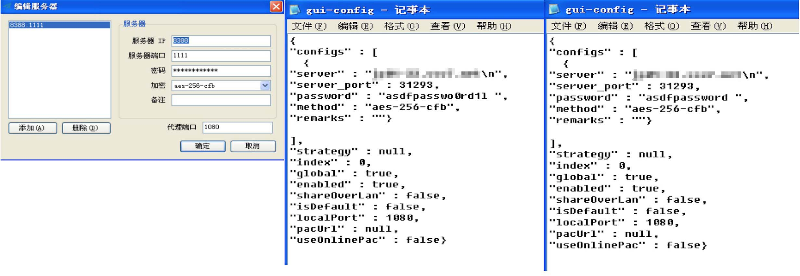

这篇文章主要讲一下windows下常见的一些问题，及解决方法。如果您还没有 shadowsocks 账号，请从 这里 获得。
gui-config.json中的配置错误例子。gui-config.json是在你的shadowsocks.exe同目录下的文本文件，其中保存了shadowsocks程序中配置的服务器等信息，用户可以自行配置，也可以登录网站后台下载我们生成好的配置文件使用。
常见的错误有以下几种：

从左到右
第一种是配置错误类，图中这里就是错误的例子。
服务器ip栏应该填的是我们在后台给出的服务器地址（域名的形式），注意不要搞错。
远程端口是我们发给你的服务器信息中那个端口，是五位数的，比如10001。
加密方式统一都是 aes-256-cfb。
本地端口如无意外请直接填 1080，如果你会自己配置，那就选自己想要的端口。
第二种是密码错误的，如果是手打密码，请特别小心诸如字母l数字1，字母o数字0这些容易错的地方，而且密码是大小写敏感的，大小写不要搞错了。
第三种是额外字符的问题，在每个服务器信息配置栏，都应该是准确的信息而不包含任何额外字符，比如例子中的"******\n"，这个\n就是额外字符，"asdfpasswo0rd1l "，这个密码，最后的空格也是额外字符。
解决方法，右键shadowsocks将其退出，然后手动编辑gui-config.json文件，将这些错误更正，保存，重开shadowsocks。
某些版本的迅雷会更改 windows 网络设置，导致影响 shadowsocks 所使用的 socks5 代理功能，新版好像是有修复，但依然有用户会遇到这个问题。详细信息可见链接[1][2]。
解决方案，按win+r，输入services.msc，在服务列表内找到迅雷的服务，XLservicePlatform，将其禁用，再试试看。
还有问题的话，建议将迅雷完全卸载一下，重启再试试。
[1] https://github.com/shadowsocks/shadowsocks-windows/issues/247
[2] http://yangtai.xunlei.com/?p=10120
这个问题取决于所使用的浏览器。
IE的话，请右键 shadowsocks 图标，选择 “启用系统代理” 即可，如果你进一步再选择“全局模式”的话，用ie打开ip.cn就可以看到是shadowsocks服务器的ip，而不是你本地的ip(已知某些杀毒软件会修改ie的行为导致全局模式也是本地ip，这种情况请使用chrome测试)。
chrome的话，请参见教程配置switchyomega，并使用教程中提供的配置文件，然后一定记得要点击switchyomega的图标切换一下代理模式。
这是由于shadowsocks没有权限更改它想要的注册表项目，参考链接里的信息，把那一项权限更改即可。
https://github.com/shadowsocks/shadowsocks-windows/issues/253
在通知区域的 Shadowsocks 的图标上右键，找到显示日志，单击打开。
如果看到日志里显示“此实现不是 Windows 平台 FIPS 验证的加密算法的一部分”，如下操作:
1.建议升级到最新版试试 https://github.com/shadowsocks/shadowsocks-windows/releases
2.如果升级到最新版没有解决问题，请您执行以下如下的操作
首先按 win + R 运行输入 regedit 打开注册表
依次打开如下项：
HKEY_LOCAL_MACHINE\SYSTEM\CurrentControlSet\Control\Lsa\FipsAlgorithmPolicy
找到Enable，将值改为0
以管理员身份运行命令提示符（cmd），执行：
netsh interface ipv4 reset
netsh interface ipv6 reset
netsh winsock reset
重启电脑。
有些网络环境解析我们的节点地址会有麻烦
按住win+r，输入cmd，回车。在新窗口内执行nslookup 节点地址，来看一下本地dns解析是否出现问题。
图中这里是正常的输出，注意最后的Name和查到对应的Address。
具体操作：
打开ip.cn，将你的节点地址输入进去，然后回车，网站会返回给你一个ip，这个ip就是节点地址所对应的ip地址。打开shadowsocks程序的服务器配置窗口，将服务器地址修改成ip地址。
请注意修改的时候不要出现1章节中提到的常见错误，比如复制的时候ip后面多了个”\n”。
请注意有些特殊情况情况我们会迁移服务器，如果发现使用ip代替节点地址不能使用了，请重新操作一下，可能是ip变更了。
有一些网络环境，如公司，某些校园网，会封禁高端口，这种情况可以使用telnet来排查一下。
按住win+r，输入cmd，回车。在新窗口内执行 telnet 服务器地址 端口，即可。
如果执行完是黑屏，那就是正常的没问题，否则就是网络有防火墙封掉了高端口，如是公司的话，建议咨询管理网络的相关人员。
例子如下图，左边是失败的，右边是成功的。
如果执行telnet 出现了报错【’telnet’ 不是内部或外部命令、可执行的程序或批处理文档】请参见下面链接进行操作
https://support.microsoft.com/zh-tw/kb/982538
已知的一些杀毒软件，如nod32，卡巴斯基等等，他们的防火墙会影响shadowsocks导致问题，请在设置内放行shadowsocks。
例如nod32的这个选项会有影响，把它关闭掉。"设置→Internet保护→Web访问保护→Web协议→启用Https检查"。
最后，如果本篇文档不足以解决问题，请发工单，并详细描述你所遇到的问题，配上截图以便我们更好的了解你的本地环境，谢谢。